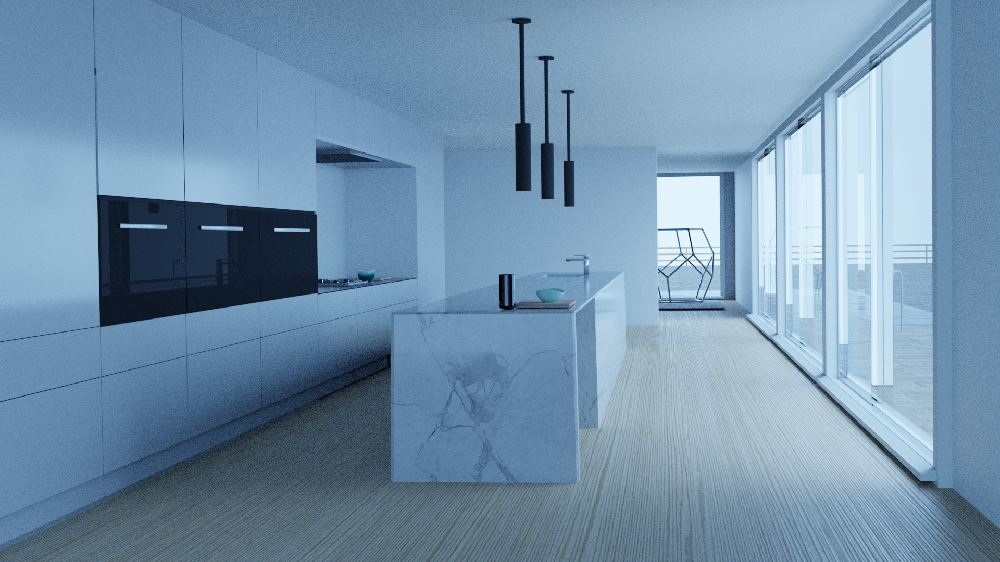

PORTFOLIO
Here you can see some highlights from all my renders, however if you would like to view my full portfolio, and all the renders I created, you can go to the portfolio page by clicking on the 'Portfolio' button in the navigation bar at the top of this website.

Kitchen render
I did this project to learn about environments and scenes with multiple objects.
Details